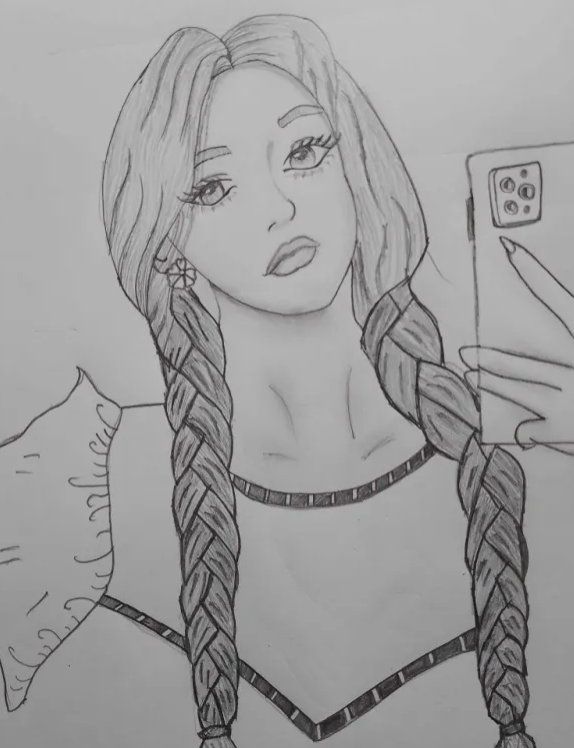
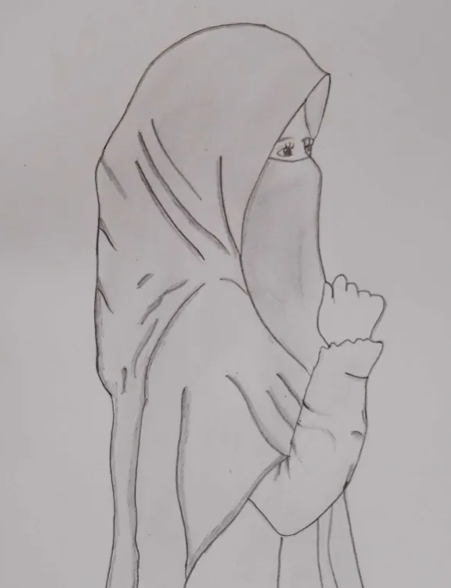
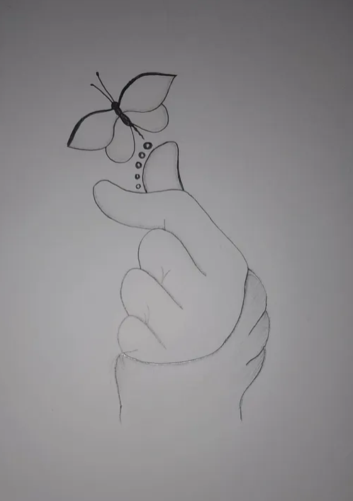
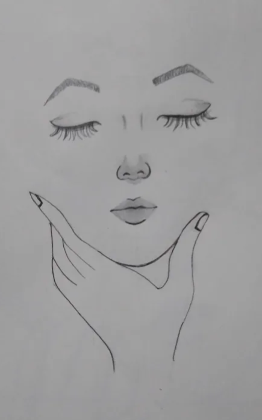
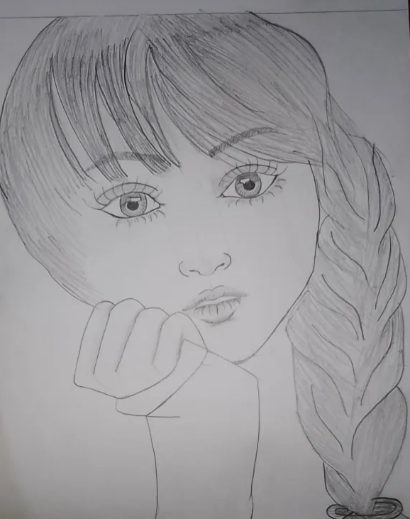
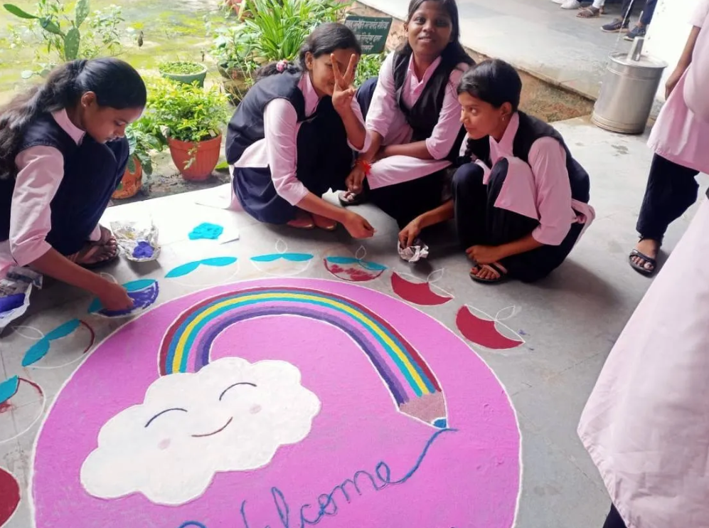
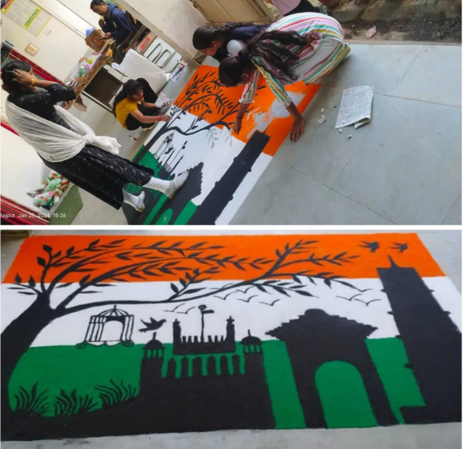
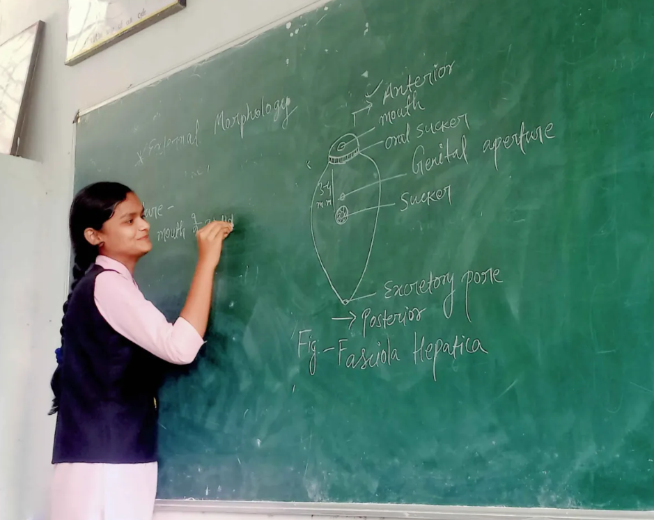

VI
A LITTLE MORE ABOUT ME
Beyond Learning & Work
I enjoy making things with my hands. I like crocheting, drawing and exploring different kinds of crafts. I also enjoy learning new things, even when they are completely unfamiliar to me.
Drawing
Drawing is one of the ways I enjoy expressing my creativity. Here are some of my drawings.





Rangoli
I also enjoy creating rangoli designs. I like experimenting with patterns, shapes and colours.


Teaching & Taking Sessions
I love taking classes and conducting sessions. During my college days, I used to take Zoology and Chemistry classes. I enjoyed explaining concepts, interacting with students and helping them understand their subjects.

I also enjoy talking to people, listening to their stories and understanding their experiences. I find joy in helping others whenever I can.
Another thing I enjoy is creating activities around life lessons and writing my thoughts in my diary. I like observing everyday situations and turning them into questions, reflections or activities that people can connect with.
I believe creativity is not limited to art. It is also about how we think, observe, express ourselves and find new ways to explore ideas.
Connect With Me
I am someone who enjoys exploring, creating, questioning and learning. There are so many things I haven't discovered yet, and I look forward to the experiences and people that will help me discover them.